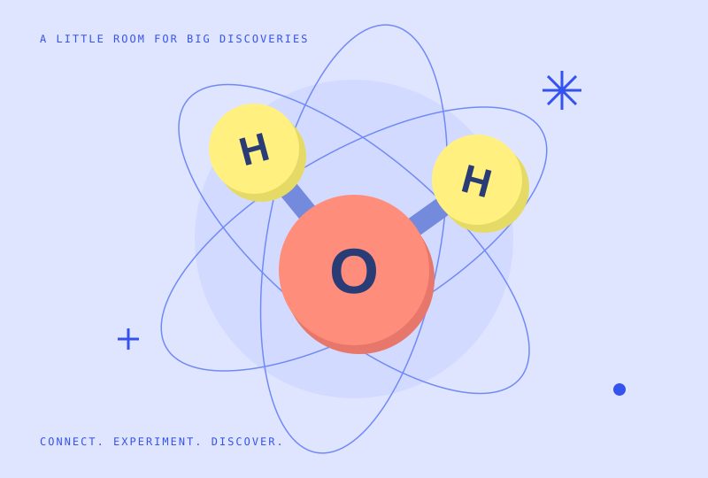
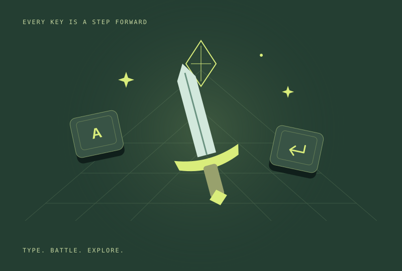
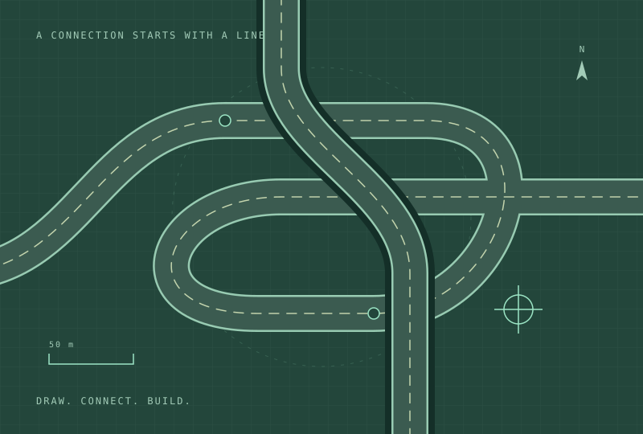

01 / SCIENCE & PLAY
あそべる科学実験室SCIENCE
実験室であそぶlab.sackam.net（新しいタブで開く）SCIENCE
ROOM●
原子をつなぐ。星をまわす。波を重ねる。
さわって発見する、あそべる科学シミュレーター。

好奇心から生まれた、ブラウザの中の小さな世界。
気になるものから、のぞいてみてください。
原子をつなぐ。星をまわす。波を重ねる。
さわって発見する、あそべる科学シミュレーター。

打って戦う。選んで強くなる。
英語・日本語ローマ字で敵と戦い、報酬から装備を選んで全10ステージの遺跡へ。記録の分析やデイリーチャレンジも。

ここから、道がつながる。
高速道路も、複雑なジャンクションも。平面・立体のビューで道路ネットワークを設計し、作品をJSONで保存できます。

「こんなのがあったら、ちょっと楽しそう。」
そんな好奇心を、さわって遊べるかたちに。
科学を試したり、ゲームで冒険したり、道をつくったり。
ブラウザから気軽に楽しめる作品をつくっています。